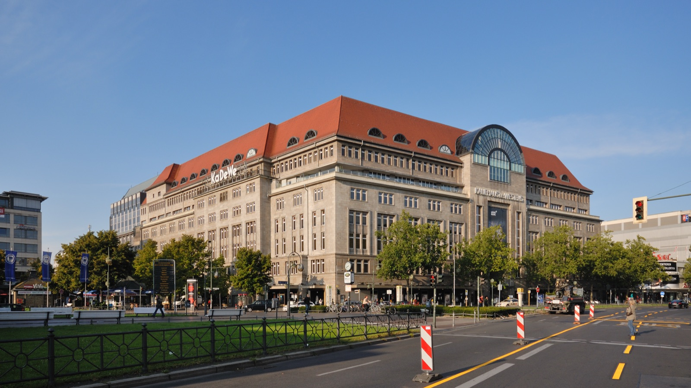
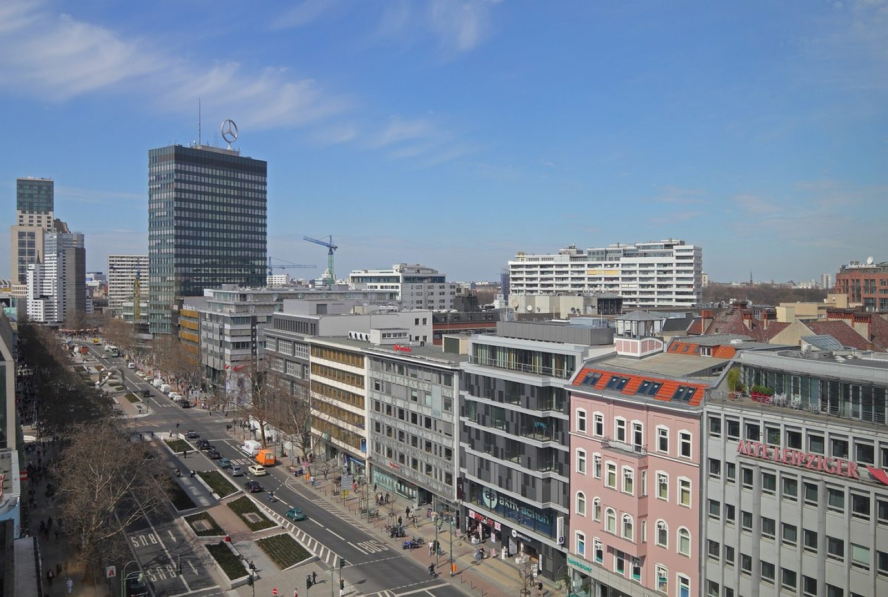
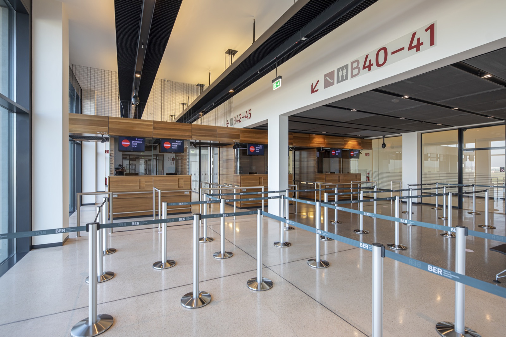
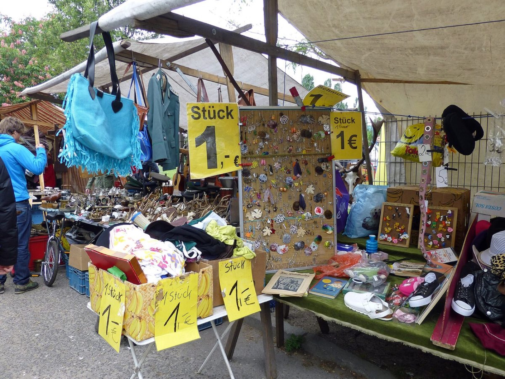

Tax Free Shopping in Berlin - Visual Contact Sheet

Cover: KaDeWe shopping landmark, strong first-viewport signal.

Shopping area: wider west-side retail context for serious purchases.

Airport process: customs validation at BER Terminal 1.

Non-clean case: flea markets are good Berlin experiences, not reliable refund paperwork.